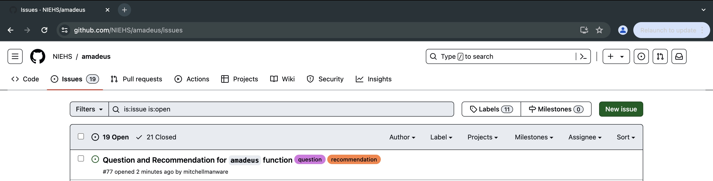

amadeus is a mechanism for data, environments, and user setup for common environmental and climate health datasets in R. amadeus has been developed to improve access to and utility with large scale, publicly available environmental data in R.
Installation
amadeus is not yet available from CRAN, but it can be installed with the devtools, remotes, or pak packages.
devtools::install_github("NIEHS/amadeus")
remotes::install_github("NIEHS/amadeus")
pak::pak("NIEHS/amadeus")Contribution
To add or edit functionality for new data sources or datasets, open a Pull request into the main branch with a detailed description of the proposed changes. Pull requests must pass all status checks, and then will be approved or rejected by amadeus’s authors.
Utilize Issues to notify the authors of bugs, questions, or recommendations. Identify each issue with the appropriate label to help ensure a timely response.

Download
download_data accesses and downloads raw geospatial data from a variety of open source data repositories. The function is a wrapper that calls source-specific download functions, each of which account for the source’s unique combination of URL, file naming conventions, and data types. Download functions cover the following sources:
| Data Source | File Type | Data Genre |
|---|---|---|
| Climatology Lab TerraClimate | netCDF | Meteorology |
| Climatology Lab GridMet | netCDF | Climate Water |
| Köppen-Geiger Climate Classification | GeoTIFF | Climate Classification |
| MRLC1 Consortium National Land Cover Database (NLCD) | GeoTIFF | Land Use |
| NASA2 Moderate Resolution Imaging Spectroradiometer (MODIS) | HDF | Atmosphere Meteorology Land Use Satellite |
| NASA Modern-Era Retrospective analysis for Research and Applications, Version 2 (MERRA-2) | netCDF | Atmosphere Meteorology |
| NASA SEDAC3 UN WPP-Adjusted Population Density | GeoTIFF netCDF |
Population |
| NASA SEDAC Global Roads Open Access Data Set | Shapefile Geodatabase |
Roadways |
| NASA Goddard Earth Observing System Composition Forcasting (GEOS-CF) | netCDF | Atmosphere Meteorology |
| NOAA Hazard Mapping System Fire and Smoke Product | Shapefile KML |
Wildfire Smoke |
| NOAA NCEP4 North American Regional Reanalysis (NARR) | netCDF | Atmosphere Meteorology |
| OpenGeoHub Foundation OpenLandMap | GeoTIFF | Climate Elevation Soil Land Use Satellite |
| Parameter Elevation Regression on Independent Slopes Model (PRISM) | BIL ASCII |
Climate |
| US EPA5 Air Data Pre-Generated Data Files | CSV | Air Pollution |
| US EPA Ecoregions | Shapefile | Climate Regions |
| US EPA National Emissions Inventory (NEI) | CSV | Emissions |
| US EPA Toxic Release Inventory (TRI) Program | CSV | Chemicals Pollution |
| USGS6 Global Multi-resolution Terrain Elevation Data (GMTED2010) | ESRI ASCII Grid | Elevation |
| USGS National Hydrography Dataset (NHD) | Geopackage Geodatabase |
Hydrography |
See the “download_data” vignette for a detailed description of source-specific download functions.
Example use of download_data using NOAA NCEP North American Regional Reanalysis’s (NARR) “weasd” (Daily Accumulated Snow at Surface) variable.
directory <- "/ EXAMPLE / FILE / PATH /"
download_data(
dataset_name = "narr",
year = c(2022, 2022),
variable = "weasd",
directory_to_save = directory,
acknowledgement = TRUE,
download = TRUE
)Downloading requested files...
Requested files have been downloaded.
list.files(paste0(directory, "weasd"))[1] "weasd.2022.nc"Process
process_covariates imports and cleans raw geospatial data (downloaded with download_data), and returns a single SpatRaster or SpatVector into the user’s R environment. process_covariates “cleans” the data by defining interpretable layer names, ensuring a coordinate reference system is present, and managing `timedata (if applicable).
To avoid errors when using process_covariates, do not edit the raw downloaded data files. Passing user-generated or edited data into process_covariates may result in errors as the underlying functions are adapted to each sources’ raw data file type.
Example use of process_covariates using the downloaded “weasd” data.
weasd <- process_covariates(
covariate = "narr",
date = c("2022-01-01", "2022-01-05"),
variable = "weasd",
path = paste0(directory, "weasd"),
extent = NULL
)Cleaning weasd data for January, 2022...
Detected monolevel data...
Returning daily weasd data from 2022-01-01 to 2022-01-05.
weasdclass : SpatRaster
dimensions : 277, 349, 5 (nrow, ncol, nlyr)
resolution : 32462.99, 32463 (x, y)
extent : -16231.49, 11313351, -16231.5, 8976020 (xmin, xmax, ymin, ymax)
coord. ref. : +proj=lcc +lat_0=50 +lon_0=-107 +lat_1=50 +lat_2=50 +x_0=5632642.22547 +y_0=4612545.65137 +datum=WGS84 +units=m +no_defs
source : weasd.2022.nc:weasd
varname : weasd (Daily Accumulated Snow at Surface)
names : weasd_20220101, weasd_20220102, weasd_20220103, weasd_20220104, weasd_20220105
unit : kg/m^2, kg/m^2, kg/m^2, kg/m^2, kg/m^2
time : 2022-01-01 to 2022-01-05 UTCCalculate Covariates
calc_covariates stems from the beethoven project’s need for various types of data extracted at precise locations. calc_covariates, therefore, extracts data from the “cleaned” SpatRaster or SpatVector object at user defined locations. Users can choose to buffer the locations. The function returns a data.frame or SpatVector with data extracted at all locations for each layer or row in the SpatRaster or SpatVector object, respectively.
Example of calc_covariates using processed “weasd” data.
locs <- data.frame(id = "001", lon = -78.8277, lat = 35.95013)
weasd_covar <- calc_covariates(
covariate = "narr",
from = weasd_process,
locs = locs,
locs_id = "id",
radius = 0,
geom = FALSE
)Detected `data.frame` extraction locations...
Calculating weasd covariates for 2022-01-01...
Calculating weasd covariates for 2022-01-02...
Calculating weasd covariates for 2022-01-03...
Calculating weasd covariates for 2022-01-04...
Calculating weasd covariates for 2022-01-05...
Returning extracted covariates.
weasd_covar id time weasd_0
1 0001 2022-01-01 0.000000000
2 0001 2022-01-02 0.000000000
3 0001 2022-01-03 0.000000000
4 0001 2022-01-04 0.000000000
5 0001 2022-01-05 0.001953125Additional Resources
The following R packages can also be used to access climate and weather data in R, but each differs from amadeus in the data sources covered or type of functionality provided.